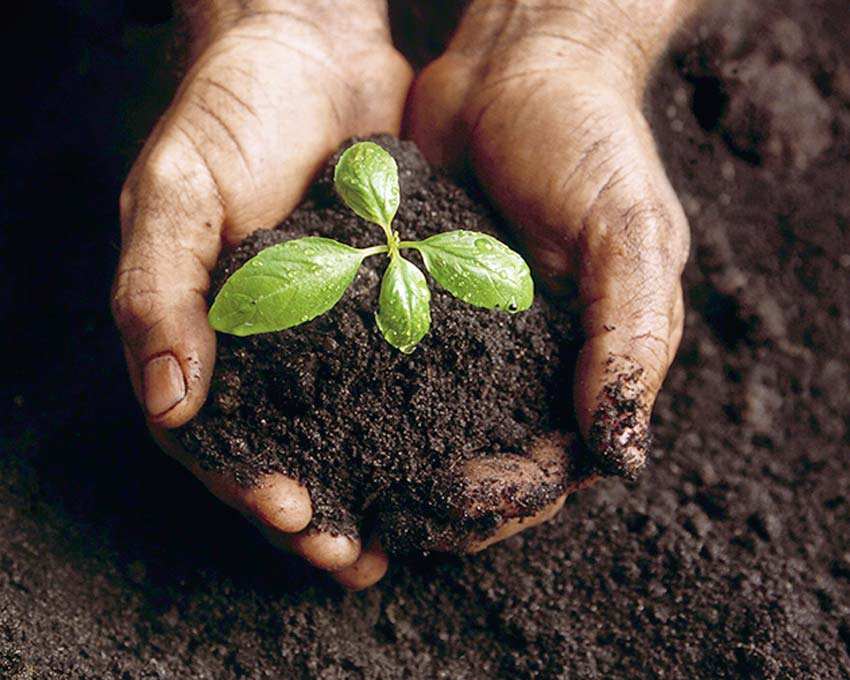

Mengapa harus melestarikan tanah?
Tanah harus dilestarikan karena berfungsi sebagai sistem penyangga kehidupan, menjadi sumber air baku, sumber pangan, menjaga kekayaan alam
Melestarikan ekosistem tanah adalah upaya menjaga kelestarian lingungan
Menjaga kebersihan dan kelestarian tanah akan memperpanjang usia bumi sebagai tempat berlangsungnya kehidupan mahluk hidup. Tujuan 15 TPB adalah melindungi, merestorasi dan meningkatkan pemanfaatan berkelanjutan eksosistem daratan, mengelola hutan secara lestari, menghentikan penggurunan, memulihkan degradasi lahan, serta menghentikan kehilangan keanekargaman hayati.
Dalam rangka mencapai tujuan nasional ekosistem daratan pada tahun 2030, ditetapkan 12 target yang diukur melalui 25 indikator. Target-target tersebut terdiri dari tata kelola kehutanan, konservasi dan keanekaragaman hayati, melestarikan dan memanfaatkan nilai ekonomi hayati, penegakan hukum bidang lingkungan hidup, karantina hewan dan tumbuhan, serta keamanan hayati hewan dan nabati.
Beberapa langkah yang dapat dilakukan untuk menjaga kelestarian tanah adalah:
- Lakukan reboisasi.
- Batasi penggunaan zat kimia pada tanah.
- Hindari menimbun sampah di tanah.
- Buatlah daerah resapan.
- Jangan lakukan penebangan hutan sembarangan.
Upaya-upaya yang dilakukan untuk mencapai target-target tersebut dijabarkan pada kebijakan, program dan kegiatan yang akan dilakukan oleh pemerintah maupun nonpemerintah.

Jaga kebersihan tanah
Rawat ekosistem tanah
Lindungi kelestarian tanah.
Call To Action
Terdapat beberapa masalah kelestarian tanah, mari kita perbaiki bersama-sama!
Call To ActionDampak Kerusakan Ekosistem Tanah
Berikut ini adalah beberapa dampak jika tanah mengalami kerusakan
Kekeringan Berkepanjangan
Tanah yang kering dan tidak nyaman adalah salah satu dampak kerusakan tanah.
Rusaknya Lingkungan
Rusaknya lingkungan adalah salah satu dampak nyata yang terjadi akibat rusaknya ekosistem tanah.
Potensi Terjadi Bencana Alam
Jika ekosistem tanah rusak maka akan berpotensi terjadi bencana alam seperti tanah longsor.
Our Team
Kelompok 120 Cluster 17

Muhammad Bintang Saktya Ramadhan
Sistem Informasi
Danapati Nabil Wibowo
Teknik Komputer
Muhammad Muflih Farhan
Teknik Informatika
Grace Nirwana Sianturi
Sistem Informasi
Alfina Zahra Salsabila
Teknologi InformasiFrequently Asked Questions
Beberapa pertanyaan mengenai ekosistem tanah